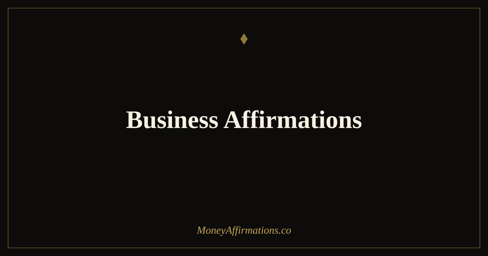

Business Affirmations: 30 Statements for Entrepreneurial Success

Running a business is one of the most direct tests of your beliefs about money and your own worth. Every pricing decision, every client pitch, every invoice sent asks the same quiet question: do you actually believe your work has value? Most entrepreneurs have the skills. What holds revenue back is usually not competence — it is the internal narrative that runs alongside the work, whispering that the price is too high, the client might say no, or that success is fragile and temporary.
Business affirmations address that internal narrative directly. These 30 statements are designed for entrepreneurs, freelancers, business owners, and anyone who ties their income to their own effort and identity. They target the specific beliefs that block business growth: fear of charging well, reluctance to sell, imposter syndrome, and the quiet conviction that thriving financially might make you less likeable or less "real." Mindset and business results are more tightly linked than most business advice acknowledges.
What are business affirmations?
Business affirmations are present-tense statements that align your professional identity and financial expectations with the level of success you are working toward. Unlike general money affirmations, they address the specific psychological challenges of running a business: self-promotion discomfort, fear of rejection, difficulty charging premium prices, and the tendency to work harder without asking to be paid more.
They are particularly powerful for solopreneurs and freelancers, where the gap between the person and the business is thin. When you are the product as well as the provider, every financial negotiation is personal. Business affirmations build the psychological infrastructure — the confidence, clarity, and conviction — that allows financial growth without constant second-guessing. For additional support in this area, the affirmations for entrepreneurs and affirmations for freelancers collections offer further depth.
30 business affirmations
- I run a business that creates real value and I am paid well for it.
- My skills, expertise, and perspective are worth a premium price.
- I charge what my work is worth and I do so with calm confidence.
- I am a capable, credible, and compelling leader of my own financial future.
- Clients who value quality find me, work with me, and return to me.
- My business grows steadily because I show up with integrity and intention.
- I ask for what I am worth, clearly and without apology.
- Sales conversations are simply aligned exchanges of value — I welcome them.
- I am building a business that supports the financial life I deserve to live.
- My ideas have merit, my work has impact, and my income reflects both.
- I invest in my business from a place of confidence, not fear.
- I attract the right clients who appreciate, respect, and pay me well.
- My business revenue grows as my belief in my own value grows.
- I handle financial decisions in my business with clarity and courage.
- Every "no" I receive moves me closer to the right "yes" — I continue anyway.
- I am proud of what I create and I present it to the world without shrinking.
- My income ceiling rises every time I expand my belief in what is possible.
- I lead my business with vision, persistence, and genuine financial intelligence.
- I am always learning, always improving, and always worth more than yesterday.
- Profitable and purposeful are not in conflict — my business is both.
- I set clear financial goals for my business and I take aligned action toward them.
- I release the fear of success and welcome the financial growth I have worked for.
- My business is a genuine expression of my best work and it earns accordingly.
- I have the resilience, skill, and mindset to navigate every stage of business growth.
- I negotiate from a position of value, not from a place of desperation or doubt.
- My consistent effort and focused attention produce compounding business results.
- I celebrate every financial milestone in my business as evidence of my growth.
- I am the kind of business owner who makes smart decisions and creates lasting wealth.
- The market needs what I offer and I make it easy for the right people to find and pay for it.
- I build my business from strength, from purpose, and from the belief that I deserve to succeed.
How to use these affirmations
Use business affirmations before the moments that matter most financially: before setting your rates, before a discovery call, before sending a proposal, before publishing a price increase, before following up on an unpaid invoice. These are the moments where internal doubt most directly affects external outcomes. Saying two or three affirmations immediately before these actions does not make you artificially confident — it removes enough of the hesitation to let the competence you already have come through clearly.
Build a brief morning practice using five statements from this list, choosing the ones that address your current growth edge. If imposter syndrome is active, use identity statements like "I am a capable, credible leader of my financial future." If pricing is the block, use value statements like "I charge what my work is worth, clearly and without apology." Rotate the statements every two to three weeks, always choosing ones that still create a small sense of stretch. When an affirmation begins to feel completely natural, it has done its job — move to the next level. For the income side of the equation, the affirmations for sales confidence collection addresses the specific mindset of asking to be paid.
How imposter syndrome limits business income — and how affirmations interrupt it
Imposter syndrome — the persistent belief that you are not as competent as others perceive you to be and that you will eventually be "found out" — is particularly prevalent among entrepreneurs, and it has a measurable cost. Research by psychologist Pauline Clance, who first identified the phenomenon in the 1970s, found that imposter feelings are not correlated with actual competence: many of the highest performers experience them most intensely. What the research consistently shows is that imposter syndrome suppresses financial behaviour specifically: people underprice, undercharge, avoid visibility, decline opportunities, and work harder to "earn" their place rather than asking to be compensated for it.
Affirmations interrupt this pattern not by pretending the doubt is not there, but by introducing a competing identity narrative that the brain can begin to evaluate. When you repeat "My skills and expertise are worth a premium price" consistently, you are not lying to yourself — you are creating the psychological conditions under which you can act as if that is true. Over time, the actions that follow (charging more, asking for referrals, declining underpriced work) generate evidence that confirms the new belief. The imposter story does not disappear overnight, but it loses its authority over financial decisions — and that is when the revenue numbers begin to shift.
Tips to make them work faster
- Use them before pricing conversations. Even one affirmation said aloud thirty seconds before a rates discussion changes the energy you bring to it — and clients notice.
- Write your revenue goal on the same page. Pair affirmations with a visible number. Belief anchored to a specific target is more directive than belief floating in the abstract.
- Say the uncomfortable ones most often. "I ask for what I am worth without apology" probably creates resistance. That resistance is exactly where the work is.
- Track business confidence weekly, not just revenue. Rate your confidence in charging, selling, and being visible on a scale of one to ten each Friday. The number should trend upward.
- Celebrate every financial milestone. Most entrepreneurs skip this. Each time revenue hits a new level — even small ones — pause and acknowledge it. Recognition cements the belief that growth is real and sustainable.
Frequently Asked Questions
When is the best time to use business affirmations?
The highest-impact moments are just before activities that trigger self-doubt: pricing a service, sending a proposal, making a sales call, publishing content, or asking for a raise. Using affirmations immediately before these actions changes the emotional state you bring to them — and that state affects both how you show up and how the other person responds. A morning practice also helps set a baseline confidence that carries through routine business decisions.
Do business affirmations work for freelancers and solopreneurs, not just business owners?
They work especially well for freelancers and solopreneurs, because in solo work the gap between the person and the business is thin. Every pricing decision, every client interaction, every piece of content published is a direct expression of your own belief in your value. Business affirmations are essentially self-worth affirmations applied to a professional context — which is exactly what independent workers most need.
How do I choose which business affirmations to focus on?
Choose the ones that create the most resistance — the statements that feel least true or most uncomfortable. Those are the beliefs most in need of attention. If "I charge what my work is worth" makes you wince, that is your most important affirmation. If "I lead my business with clarity and confidence" feels remote, start there. Discomfort is directional information, not a reason to choose easier statements.
For a broader set of money statements to support your business and personal financial life, explore the full money affirmations collection and build a daily practice that keeps your mindset aligned with the growth you are creating.